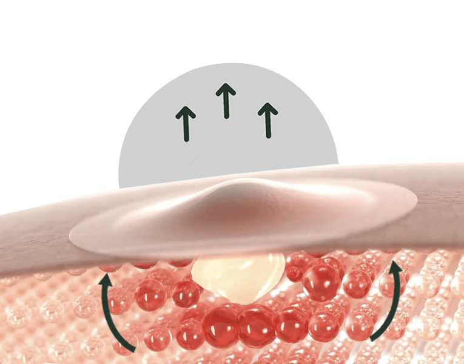
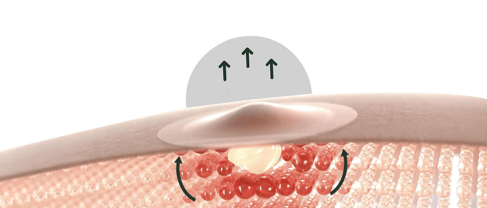

Klinicznie potwierdzona skuteczność w redukcji niedoskonałości w 8 godzin1.
Nie pozostawia śladów po niedoskonałościach.
Trójwymiarowa redukcja widoczności niedoskonałości: rozmiar, objętość i kolor.
przed
po
Niewidoczny plaster, widoczny efekt!
 Niewidoczny plaster chroni wypryski wyciągając płyn i zanieczyszczenia, aby widoczonie zniwelować niedoskonałości po 8 godzinach1.
2 rozmiary
aby przykryć wszystkie wypryski
10mm
12mm
WSKAZÓWKA: Działają najlepiej na niedoskonałości z białymi główkami
Odkryj gamę Pure Active
1 Kliniczna ocena widoczności wyprysków w 111 wybranych miejscach, u 47 badanych, po jednorazowym użyciu.